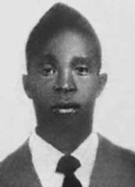

Jorge
Aprígio
de Paula
CIRCUNSTÂNCIAS DA MORTE
Jorge Aprígio de Paula morreu no dia 1º de abril de 1968, conhecido como o Dia Nacional do Protesto, após ter sido atingido por disparo de arma de fogo durante manifestação pública no centro do Rio de Janeiro em repúdio à morte do estudante Edson Luiz, ocorrida em março daquele ano. A passeata, que ocorreu no dia do quarto aniversário do Golpe Militar, desdobrou-se em diversos outros protestos espalhados por vários pontos do Rio de Janeiro e também por outras cidades do país. Um grupo de estudantes que participava da manifestação aproximou-se do Palácio de Laguna, onde residia o Ministro do Exército, Aurélio de Lyra Tavares, e foi reprimido por soldados da Polícia do Exército que vigiavam o local e abriram fogo contra os manifestantes. Várias pessoas foram feridas. Jorge Aprígio foi atingido por um tiro nas costas e morreu no local. Consta do auto de exame cadavérico que a morte ocorreu em função do emprego de arma de fogo, indicando que o disparo que o atingiu teve a trajetória de trás para frente, confirmando que Jorge morreu ao ser atingido por um tiro pelas costas. A certidão de óbito, por sua vez, declara que a morte de Jorge decorreu de “ferida transfixante do tórax, com lesão do pulmão e do coração; hemorragia interna consecutiva”. A CEMDP indeferiu, em 7 de agosto de 1997, o pedido apresentado pela família de Jorge com a alegação de que não havia elementos que comprovassem que as ruas da cidade onde ocorreram os fatos tenham se transformado em “dependência policial assemelhada”. Em função de promulgação da Lei n o 10.875/2004, amplia-se o escopo da legislação anterior e o caso é levado novamente em consideração, sendo deferido em 7 de dezembro de 2004. Os restos mortais de Jorge Agrípio de Paula foram enterrados no Cemitério de Belfort Roxo, no Rio de Janeiro.
Jorge Aprígio de Paula died on April 1, 1968, known as National Protest Day, after being hit by a gunshot during a public demonstration in the center of Rio de Janeiro in repudiation of the death of student Edson Luiz, which occurred in March of that year. The march, which took place on the fourth anniversary of the Military Coup, resulted in several other protests spread across various parts of Rio de Janeiro and also in other cities in the country. A group of students participating in the demonstration approached the Laguna Palace, where the Minister of the Army, Aurélio de Lyra Tavares, resided, and were repressed by Army Police soldiers who were guarding the place and opened fire on the protesters. Several people were injured. Jorge Aprígio was shot in the back and died at the scene. It is stated in the cadaver examination record that death occurred due to the use of a firearm, indicating that the shot that hit him had a backward trajectory, confirming that Jorge died after being shot in the back. The death certificate, in turn, states that Jorge's death resulted from a “transfixing wound to the chest, with damage to the lung and heart; consecutive internal hemorrhage”. CEMDP rejected, on August 7, 1997, the request presented by Jorge's family with the allegation that there were no elements to prove that the streets of the city where the events occurred had been transformed into a “similar police facility”. Due to the promulgation of Law No. 10,875/2004, the scope of the previous legislation was expanded and the case was taken into consideration again, being approved on December 7, 2004. The mortal remains of Jorge Agrípio de Paula were buried in the Belfort Roxo Cemetery, in Rio de Janeiro.
Jorge Aprígio de Paula murió el 1 de abril de 1968, conocido como Día Nacional de la Protesta, tras ser alcanzado por un disparo durante una manifestación pública en el centro de Río de Janeiro en repudio a la muerte del estudiante Edson Luiz, ocurrida en marzo de ese año. La marcha, que tuvo lugar en el cuarto aniversario del Golpe Militar, dio lugar a otras protestas repartidas en varios puntos de Río de Janeiro y también en otras ciudades del país. Un grupo de estudiantes participantes en la manifestación se acercó al Palacio de la Laguna, donde residía el ministro del Ejército, Aurélio de Lyra Tavares, y fueron reprimidos por soldados de la Policía Militar que custodiaban el lugar y abrieron fuego contra los manifestantes. Varias personas resultaron heridas. Jorge Aprígio recibió un disparo en la espalda y murió en el lugar. En el acta de examen del cadáver consta que la muerte se produjo por el uso de arma de fuego, indicando que el disparo que lo impactó tuvo trayectoria hacia atrás, confirmándose que Jorge murió luego de recibir un disparo en la espalda. El certificado de defunción, a su vez, señala que la muerte de Jorge se debió a una “herida traspasante en el tórax, con daño al pulmón y al corazón; consecutiva hemorragia interna”. El CEMDP rechazó, el 7 de agosto de 1997, la solicitud presentada por la familia de Jorge alegando que no existían elementos que acreditaran que las calles de la ciudad donde ocurrieron los hechos hubieran sido transformadas en una “instalación policial similar”. Con la promulgación de la Ley nº 10.875/2004, se amplió el alcance de la legislación anterior y el caso fue nuevamente tomado en consideración, siendo aprobado el 7 de diciembre de 2004. Los restos mortales de Jorge Agripio de Paula fueron enterrados en el Cementerio de Belfort Roxo, en Río de Janeiro.